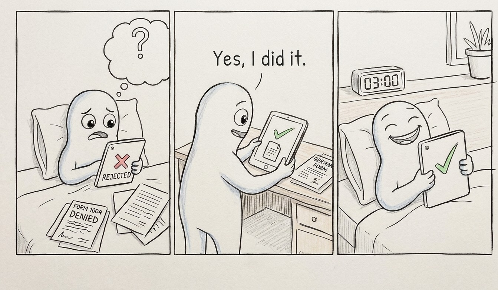

SafeSpace - thesis project
Analytical Design Fiction · Critical HCI · 2026 · Prototype built with Lovable
What if the more we turn to machines for care, the less certain we become about what care actually means?
Moving to a new country means navigating unfamiliar systems, distant relationships and moments of loneliness. In these situations, AI conversations can become unexpectedly accessible spaces: always available, seemingly attentive, and free from the obligations of human interaction.
But when does artificial support begin to feel like care, and what remains absent from that experience?
SafeSpace explores this ambiguity through the experiences of recently arrived Iranian women in Germany. It examines how AI-mediated emotional support becomes part of everyday life, situated somewhere between comfort and artificiality, connection and isolation, assistance and uncertainty.
Three ways of relating
- Reflect · A conversation with an artificial listener, where thoughts can be explored without having to explain oneself to another person.
- Recognise · Encounters with fragments of other women's experiences, without the expectation of being known.
- Reach out · A point of departure from the digital space towards human, social and institutional support.
The research behind the fiction
Within my master's thesis, I conducted eight narrative interviews with recently arrived Iranian women in Germany, which informed the development of SafeSpace. Through analytical design fiction, the project translates their experiences into an interactive exploration of the uncertain boundaries of artificial care.
